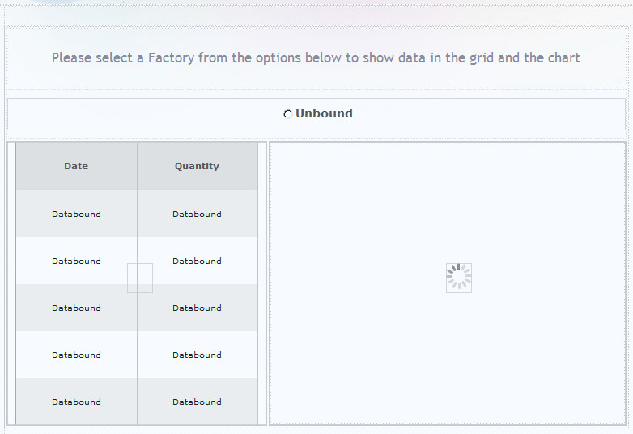
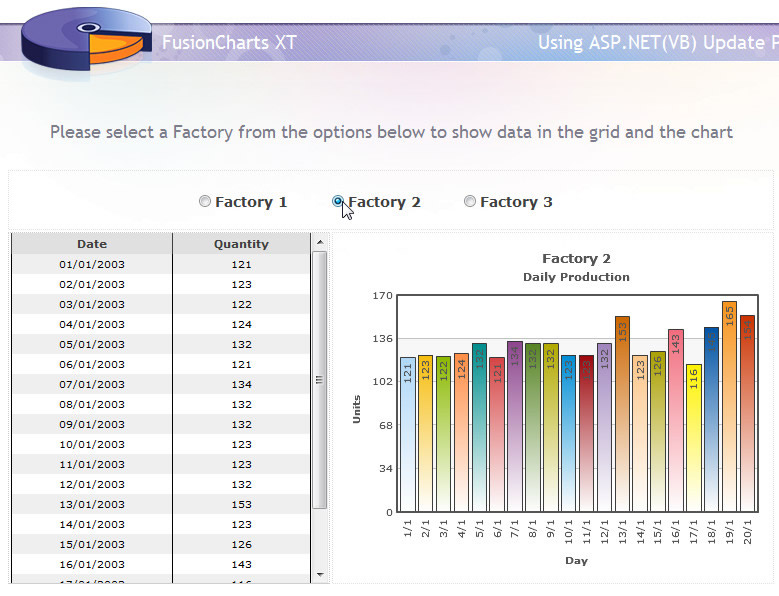
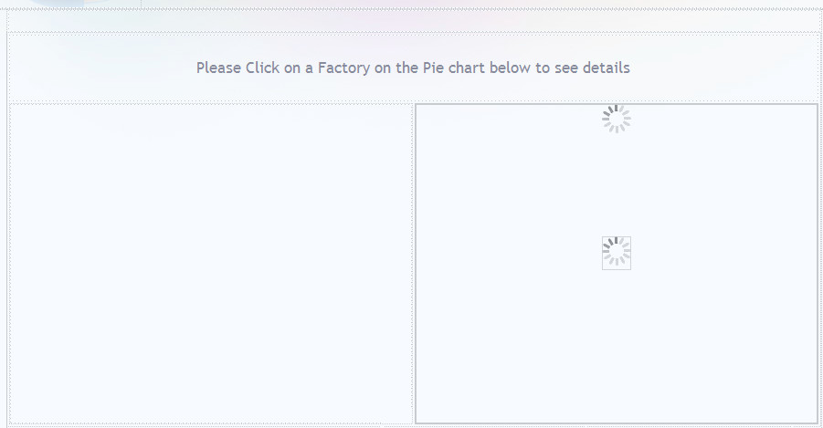
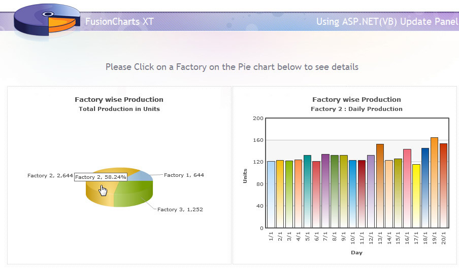

| ASP.NET.AJAX Update Panel |
FusionCharts XT can effectively be used in ASP.NET AJAX Update Panel to plot dynamic data-driven charts. In this example, we will show a few basic examples to help you get started. We will cover the following examples here:
Let's quickly see each of them. Before you go further with this page, we recommend you to please see the previous sections Basic Examples and other subsequent pages as we start off from concepts explained in that page. |
| All code discussed here is present in Download Package > Code > CS > UpdatePanel folder. |
| To use Update Panel, you need to have ASP.NET AJAX Extension installed. This extension comes pre-installed in .NET 3.5 and above. You can download it from http://www.asp.net/ajax/downloads. |
| Creating UpdatePanels |
We will create three UpdatePanels:
The design view will look like this : |
|  |
In the HTML head section we load both FusionCharts.js and jquery.min.js. Please note that jQuery is required to run this example. <script type="text/javascript" src=../FusionCharts/jquery.min.js"></script> <script type="text/javascript" src="../FusionCharts/FusionCharts.js"></script> |
Let's look at the UpdatePanel code for the FactorySelector: (Sample1.aspx) |
<asp:UpdatePanel ID="FactorySelector" runat="server">
<ContentTemplate>
<asp:RadioButtonList ID="RadioButtonList1" runat="server" AutoPostBack="True" Height="40px"
OnSelectedIndexChanged="RadioButtonList1_SelectedIndexChanged" Width="400px"
RepeatDirection="Horizontal" Style="font-weight: bold; font-size: 14px; font-family: Verdana" ForeColor="#404040">
</asp:RadioButtonList>
</ContentTemplate>
</asp:UpdatePanel> |
Here, we set a code behind function to be called when selection changes. Since AutoPostBack is set to true it will invoke AJAX call. We also add a JavaScript reference updatepanelhook.fusioncharts.js to the Script Manager. This script adds Update Client Side event listeners and takes care of the final rendering of the chart in the browser. The code to add this reference is as follows: |
<asp:ScriptManager ID="ScriptManager1" runat="server"> |
The UpdatePanel code that will contain the chart is simpler. |
<asp:UpdatePanel ID="FusionChartsUP" runat="server">
<ContentTemplate>
<asp:Panel ID="Panel1" runat="server" Height="350px" Width="440px"></asp:Panel>
</ContentTemplate>
</asp:UpdatePanel> |
Here we place a Panel control where the chart will be loaded. Now let's find out what happens in the code-behind (Sample1.aspx.cs) function RadioButtonList1_SelectedIndexChanged() when a Factory is selected : |
protected void RadioButtonList1_SelectedIndexChanged(object sender, EventArgs e)
{
//Update FusionCharts XT and gridview with as per selected factory
updateChart();
} |
It calls the UpdateChart() function. Let's trace it: |
private void updateChart()
{
//Get the factory details depending on the FactoryID from selected Radio Button
string strSQL = "select DatePro, Quantity from Factory_Output where FactoryId=" + RadioButtonList1.SelectedValue.ToString() + " order by DatePro";
//Create data reader to bind data with GridView
DbConn rs = new DbConn(strSQL);
//Fillup gridview with data from datareader
GridView1.DataSource = rs.ReadData;
// binding the data
GridView1.DataBind();
//Create database connection to get data for chart
DbConn oRs = new DbConn(strSQL);
//Create FusionCharts XT XML
StringBuilder strXML = new StringBuilder();
//Create chart element
strXML.AppendFormat("<chart caption='Factory {0}' showborder='0' bgcolor='FFFFFF' bgalpha='100' subcaption='Daily Production' xAxisName='Day' yAxisName='Units' rotateLabels='1' placeValuesInside='1' rotateValues='1' >", RadioButtonList1.SelectedValue.ToString());
//Iterate through database
while (oRs.ReadData.Read())
{
//Create set element
//Also set date into d/M format
strXML.AppendFormat("<set label='{0}' value='{1}' />", Convert.ToDateTime(oRs.ReadData["DatePro"]).ToString("d/M"), oRs.ReadData["Quantity"].ToString());
}
//Close chart element
strXML.Append("</chart>");
//outPut will store the HTML of the chart rendered as string
string outPut = "";
//when a ajax call is made we use RenderChart method
//When the page is loaded for the first time, we call RenderChart() method
outPut = FusionCharts.RenderChart("../FusionCharts/Column2D.swf", "", strXML.ToString(), "chart1", "445", "350", false, false);
//Clear Panel control which will contain the chart
Panel1.Controls.Clear();
//Add Literal control to Panel which adds the chart from outPut string
Panel1.Controls.Add(new LiteralControl(outPut));
//Close Data Reader
oRs.ReadData.Close();
} |
In the above code we do the following :
|
| Note: Please note that jQuery is required to make updatepanelhook.fusioncharts.js script work. |
Thus, the chart gets updated in UpdatePanel, using AJAX, each time a factory is selected from the Radio buttons list. Here goes a screenshot of one instance: |
|  |
| Modified Sample |
We now modify the sample above to insert two charts. The one on the left, a pie chart with summarized data, shows the total production of each Factory in each slice. On clicking a slice, that is, selecting a Factory, another chart will show up in an UpdatePanel. This Column2D chart, like the previous example, will show the details of the selected factory. Let's see how the design is modified :(Sample2.aspx) |
|  |
Here, we put only one UpdatePanel, that is, FusionChartsUP that will load up the chart. The HTML code for this remains the same as the previous example. The left part will contain the Pie chart that will load up once, when the page is loaded first. But we also have an added Javascript snippet to include in this page : |
<script language="javascript" type="text/javascript"> //Call Ajax PostBack Function function updateChart(factoryId){ //Call drillDown C# function by Ajax //we pass the name of the function ('drillDown') to call //and the parameter (i.e., factoryId) to be passed to it //both separated by a delimiter(here we use $, you can use anything) __doPostBack("Panel1","drillDown$" + factoryId); } </script> |
| This function is actually invoked when a pie slice is clicked. The factory ID is passed to the function. This function uses the ASP.NET.AJAX 's __doPostBack() function. __doPostBack() function takes two parameters. The first one is the name of the control where post-back updates will be reflected. Through the second parameter, we pass the name of the code-behind function to be called and also add the parameter to be passed to this code-behind function. The parameter will be passed to the code-behind script contained in a request variable named __EVENTARGUMENT. |
| To know more on how to evoke JavaScript functions form a chart, please refer to the Drill Down Charts section. |
Let's now see how the request is treated in the code-behind file Sample2.aspx.cs: |
protected void Page_Load(object sender, EventArgs e)
{
//This will execute first time the page loads and not on ajax post back calls
if (!IsPostBack)
{
// Show a blank Column2D Chart at first
showColumnChart();
}
else
{
// Handle Ajax PostBack Call
// store Asp.Net Ajax special HTTP request
// __EVENTARGUMENT holds value passed by JS function -__doPostBack
// The value can be like "drillDown$1"
// We take $ as delimiter so we get drillDown as the function to call
//and 1 as the factory id. It can vary depending on the pie slice clicked.
String sEventArguments = Request["__EVENTARGUMENT"];
if (sEventArguments != null)
{
//extract arguments passed to the HTTP Request
Int32 iDelimiter = sEventArguments.IndexOf('$');
String sArgument = sEventArguments.Substring(iDelimiter + 1);
// extract the name of the post back function
if (sEventArguments.StartsWith("drillDown"))
{
// call the post back function passing the argument(s)
drillDown(sArgument);
}
}
}
} |
The above code is executed whenever a page is loaded or when an AJAX call is made. It does the following :
|
The final output will look similar to this when a factory pie slice is clicked: |
|  |